Soru 1Cevap: C
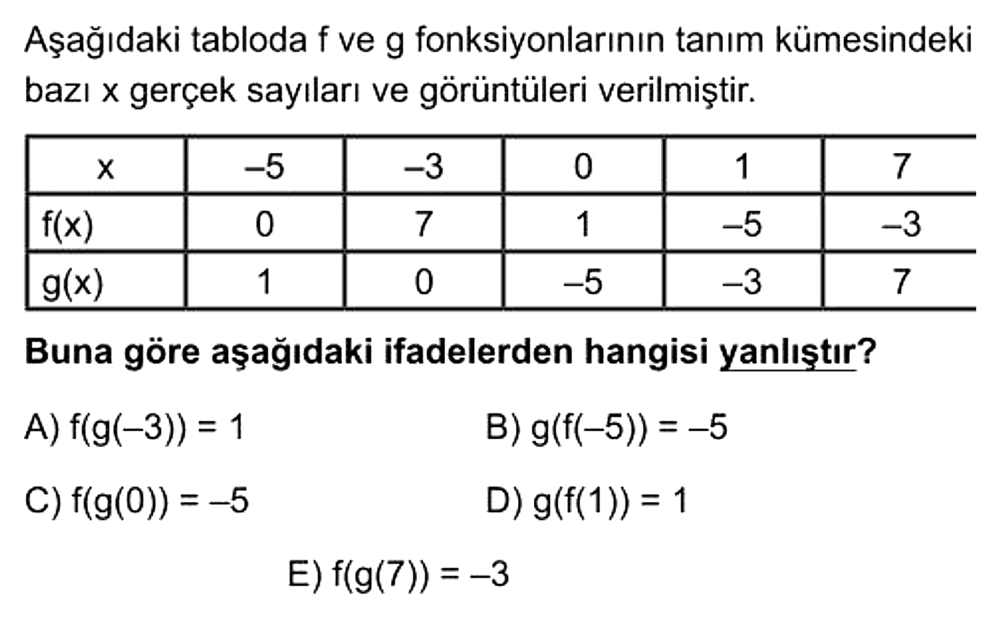
Çözüm
- $g(-3)=0$, $f(0)=1$; $f(-5)=0$, $g(0)=-5$: A ve B doğru.
- $g(0)=-5$, $f(-5)=0$: $f(g(0))=0$; C'deki $-5$ yanlıştır.
- Yanlış ifade C.
Cevap: C
Soru 2Cevap: B
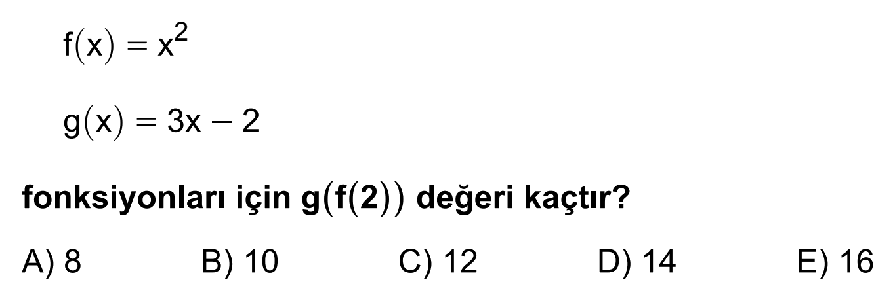
Çözüm
- $f(2)=4$.
- $g(4)=3\cdot4-2$.
- $=10$ (B).
Cevap: B
Soru 3Cevap: A
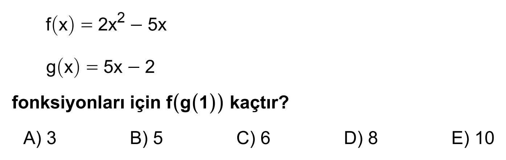
Çözüm
- $g(1)=3$.
- $f(3)=2\cdot9-15$.
- $f(g(1))=3$ (A).
Cevap: A
Soru 4Cevap: C
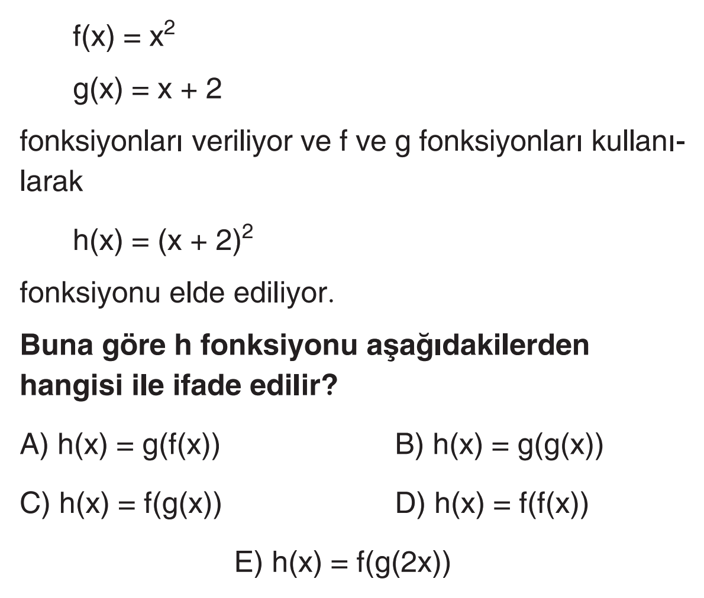
Çözüm
- $h(x)=(x+2)^2$: önce $2$ eklenir, sonra kare alınır.
- İçte $g(x)=x+2$, dışta $f(x)=x^2$.
- $h(x)=f(g(x))$ (C).
Cevap: C
Soru 5Cevap: B
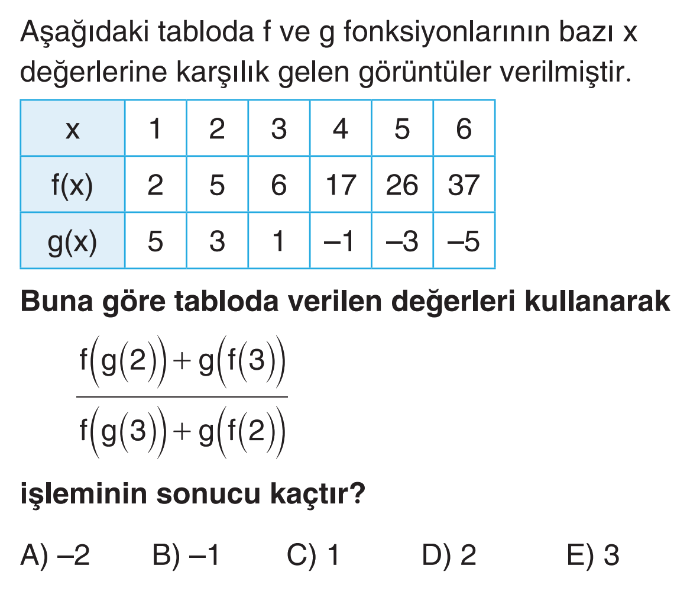
Çözüm
- Pay: $f(g(2))=f(3)=6$, $g(f(3))=g(6)=-5$; toplam $1$.
- Payda: $f(g(3))=f(1)=2$, $g(f(2))=g(5)=-3$; toplam $-1$.
- $\dfrac{1}{-1}=-1$ (B).
Cevap: B
Soru 6Cevap: C
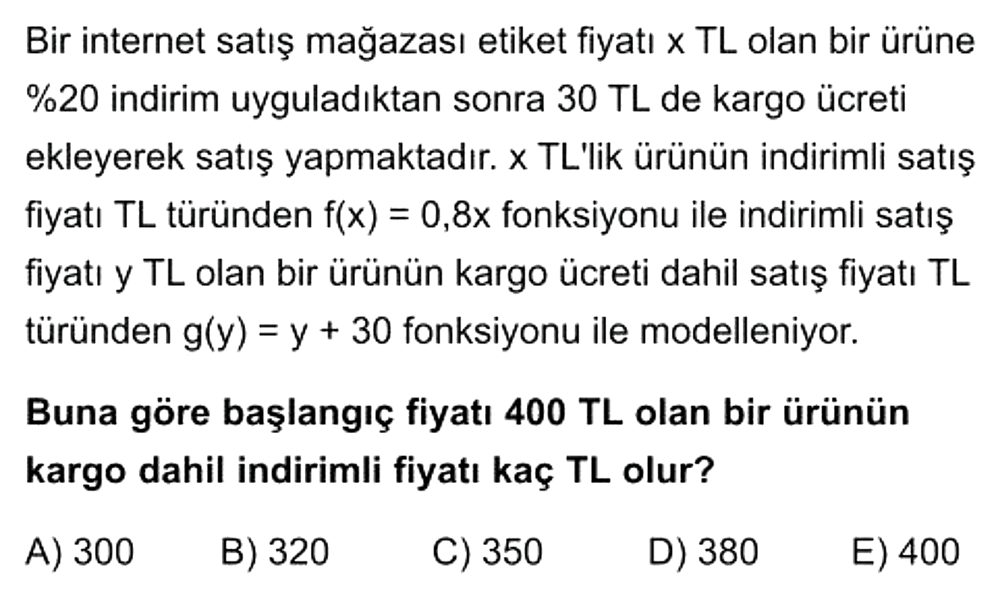
Çözüm
- İndirimli fiyat $f(400)=0{,}8\cdot400=320$.
- Kargo eklenir: $g(320)=320+30$.
- $350$ TL (C).
Cevap: C
Soru 7Cevap: C
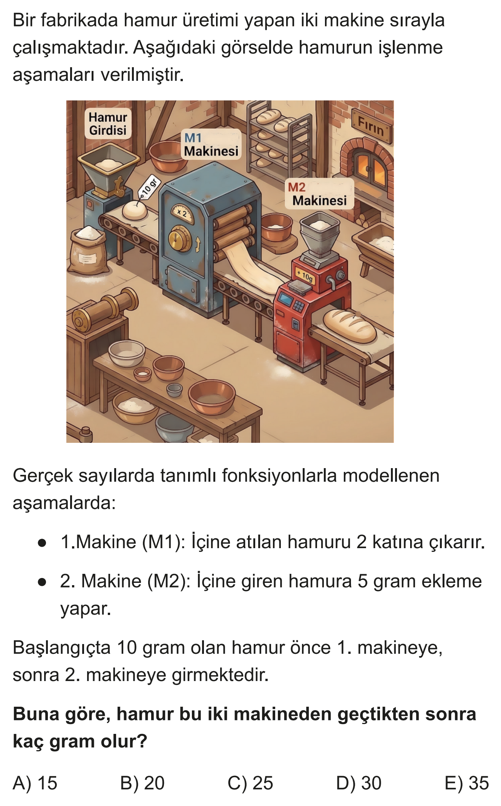
Çözüm
- 1. makine: $f(x)=2x$, 2. makine: $g(x)=x+5$.
- Hamur önce $f$'ye girer: $f(10)=20$.
- $g(20)=25$ gram (C).
Cevap: C
Soru 8Cevap: B
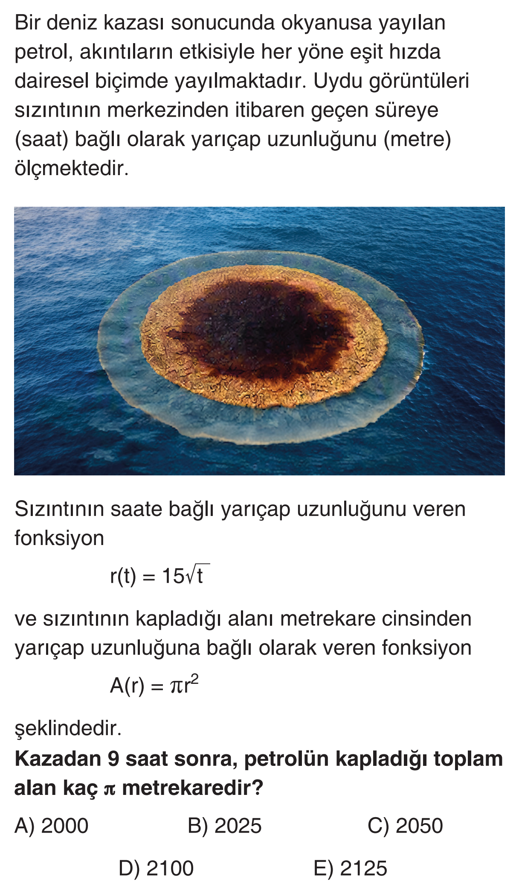
Çözüm
- $r(9)=15\sqrt9=45$ metre.
- $A(45)=\pi\cdot45^2$.
- $2025\pi$ m² (B).
Cevap: B
Soru 9Cevap: C
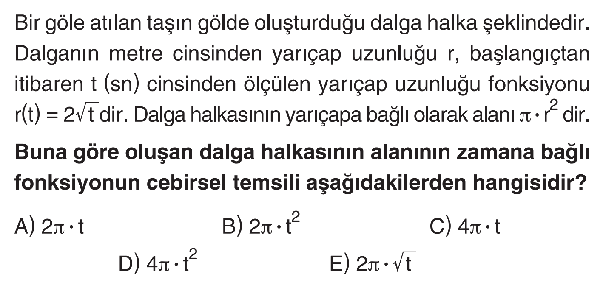
Çözüm
- $A(r)=\pi r^2$, $r(t)=2\sqrt t$.
- $A(r(t))=\pi(2\sqrt t)^2$.
- $=4\pi t$ (C).
Cevap: C
Soru 10Cevap: E
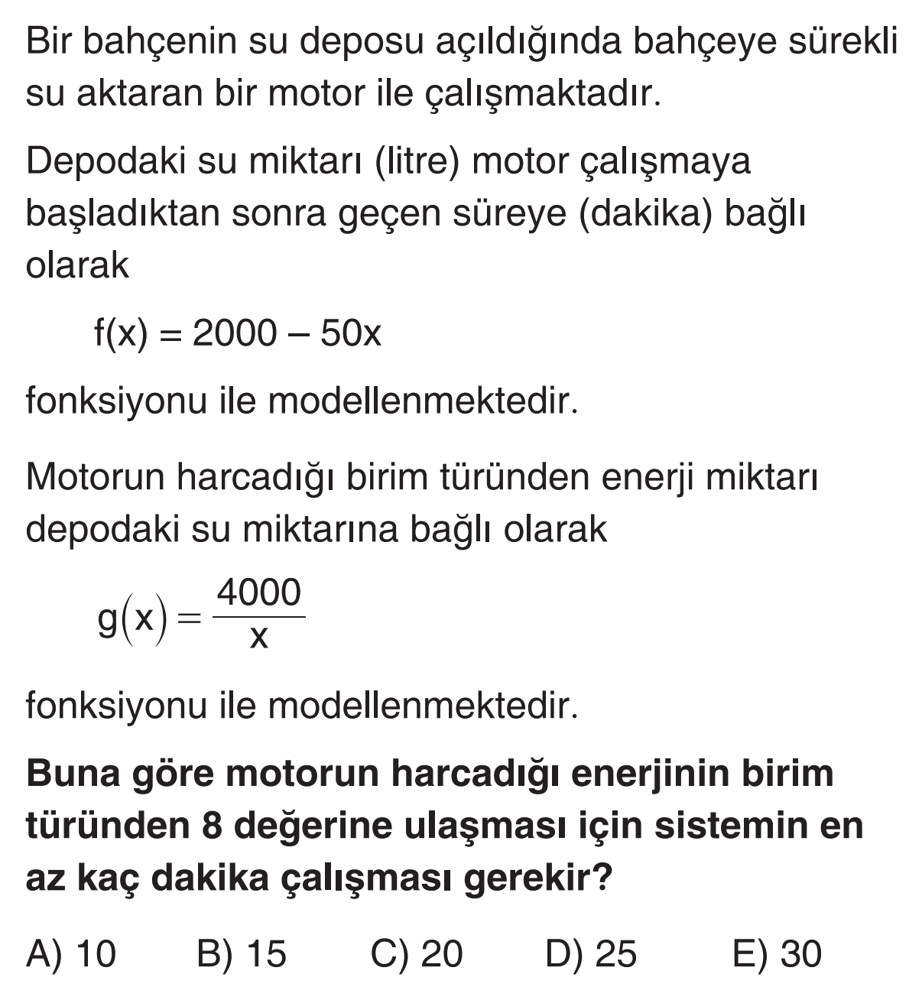
Çözüm
- Enerji zamana bağlı: $g(f(t))=\dfrac{4000}{2000-50t}$.
- $\dfrac{4000}{2000-50t}=8\Rightarrow2000-50t=500$.
- $t=30$ dakika (E).
Cevap: E
Soru 11Cevap: C
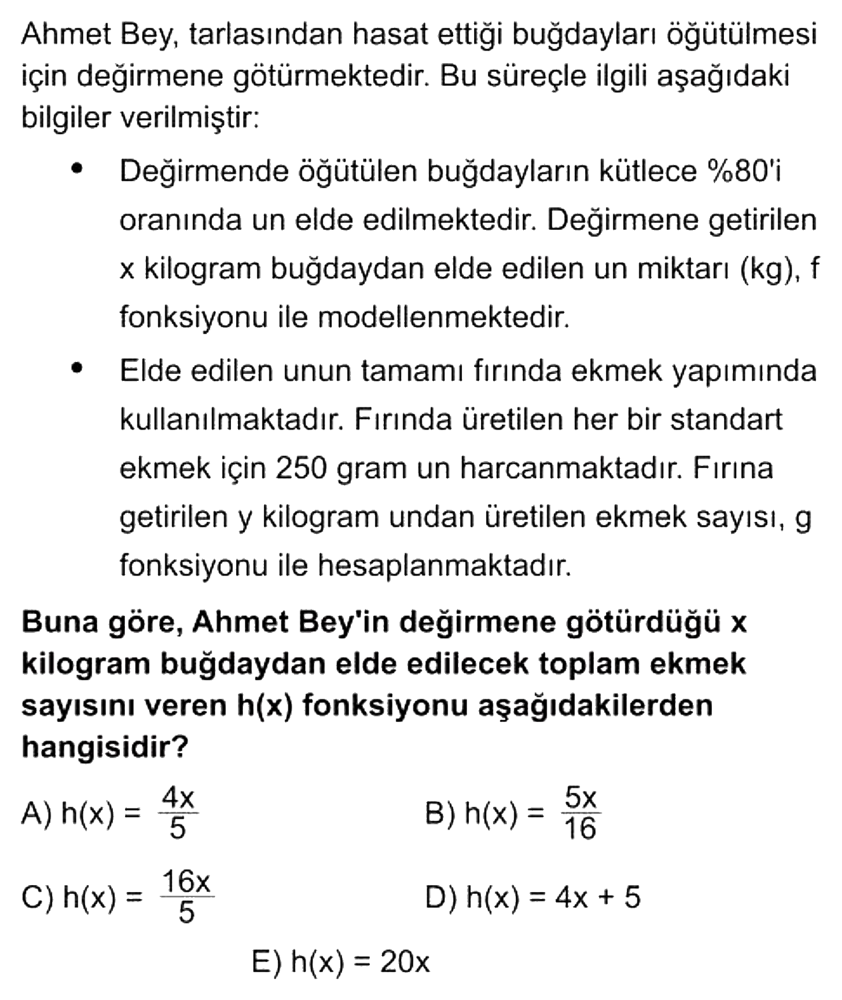
Çözüm
- $f(x)=0{,}8x$ kg un; her ekmek $0{,}25$ kg: $g(y)=4y$.
- $h(x)=g(f(x))=4\cdot0{,}8x$.
- $h(x)=\dfrac{16x}{5}$ (C).
Cevap: C
Soru 12Cevap: B
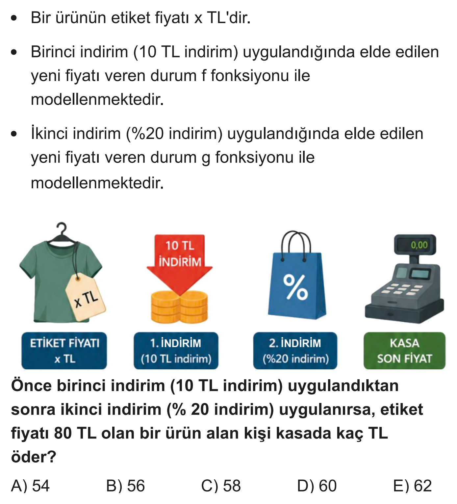
Çözüm
- Birinci indirim $f(x)=x-10$, ikinci indirim $g(x)=0{,}8x$.
- Önce $f$, sonra $g$ uygulanır: $g(f(80))=g(70)$.
- $0{,}8\cdot70=56$ TL (B).
Cevap: B
Soru 13Cevap: B
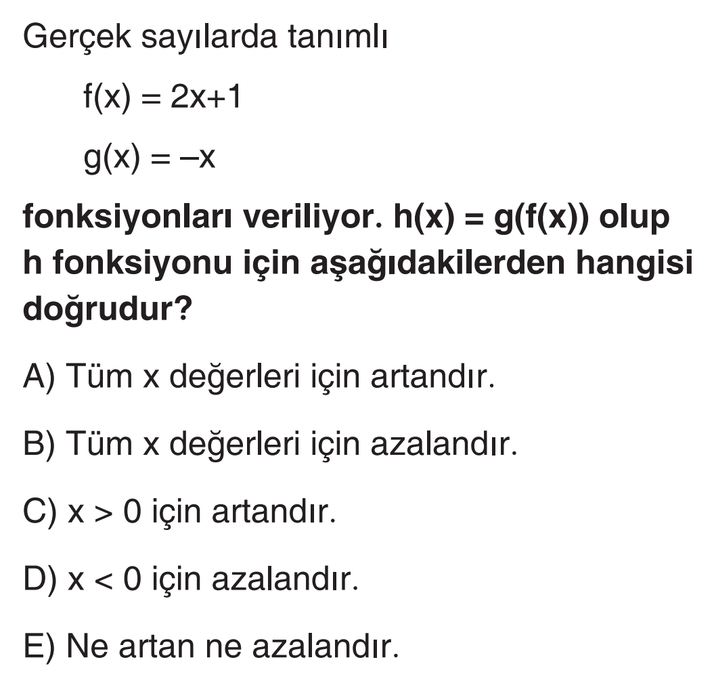
Çözüm
- $h(x)=g(f(x))=-(2x+1)$.
- $=-2x-1$, eğimi negatif.
- Tüm $x$ değerleri için azalandır (B).
Cevap: B
Soru 14Cevap: C
Gerçek sayılarda tanımlı $f(x)=x^3+2x$ fonksiyonu ile ilgili
I.$f$ tek fonksiyondur.
II.$f$ artan fonksiyondur.
III.$f$ fonksiyonunun sıfırı yoktur.
ifadelerinden hangileri doğrudur?
A)Yalnız IB)Yalnız IIC)I ve IID)I ve IIIE)I, II ve III
Çözüm
- $f(-x)=(-x)^3+2(-x)=-x^3-2x=-f(x)$ olduğundan $f$ tek fonksiyondur: I doğru.
- $x^3$ ve $2x$ fonksiyonlarının ikisi de artandır; artan iki fonksiyonun toplamı artandır: II doğru.
- $f(0)=0$ olduğundan $x=0$ fonksiyonun sıfırıdır: III yanlış. Doğrular I ve II (C).
Cevap: C
Soru 15Cevap: E
Gerçek sayılarda tanımlı $f(x)=-x^2+6x-5$ fonksiyonu veriliyor.
Buna göre aşağıdakilerden hangisi yanlıştır?
A)Maksimum değeri $4$'tür.B)Maksimum noktası $(3,4)$'tür.C)Sıfırları $1$ ve $5$'tir.D)$(-\infty,3]$ aralığında artandır.E)Bire bir fonksiyondur.
Çözüm
- Tepe noktasının apsisi $r=-\dfrac{6}{2\cdot(-1)}=3$, ordinatı $f(3)=-9+18-5=4$; parabol aşağı açıldığından maksimum noktası $(3,4)$, maksimum değeri $4$: A ve B doğru.
- $-x^2+6x-5=0\Rightarrow x^2-6x+5=(x-1)(x-5)=0$: sıfırlar $1$ ve $5$; aşağı açılan parabol tepe noktasının solunda artandır: C ve D doğru.
- $f(1)=f(5)=0$ olduğundan farklı iki elemanın görüntüsü aynıdır; $f$ bire bir değildir: yanlış olan E.
Cevap: E
Soru 16Cevap: D
Gerçek sayılarda tanımlı $f(x)=x^2-4$ fonksiyonu ile ilgili
I.$f$ çift fonksiyondur.
II.$f$ bire bir fonksiyondur.
III.$f(x)\lt0$ eşitsizliğinin çözüm kümesi $(-2,2)$ aralığıdır.
ifadelerinden hangileri doğrudur?
A)Yalnız IB)Yalnız IIC)I ve IID)I ve IIIE)II ve III
Çözüm
- $f(-x)=(-x)^2-4=x^2-4=f(x)$ olduğundan $f$ çift fonksiyondur: I doğru.
- $f(-2)=f(2)=0$; farklı iki elemanın görüntüsü aynı olduğundan $f$ bire bir değildir: II yanlış.
- $x^2-4\lt0\Rightarrow x^2\lt4\Rightarrow -2\lt x\lt2$: III doğru. Doğrular I ve III (D).
Cevap: D
Soru 17Cevap: C
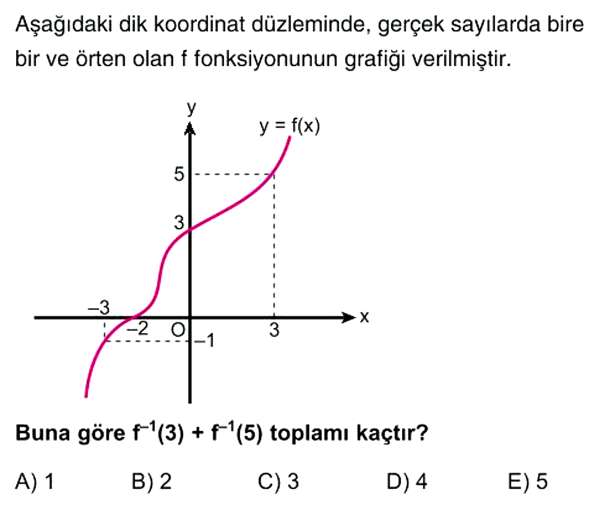
Çözüm
- Grafikte $f(0)=3$: $f^{-1}(3)=0$.
- Grafikte $f(3)=5$: $f^{-1}(5)=3$.
- Toplam $3$ (C).
Cevap: C
Soru 18Cevap: A
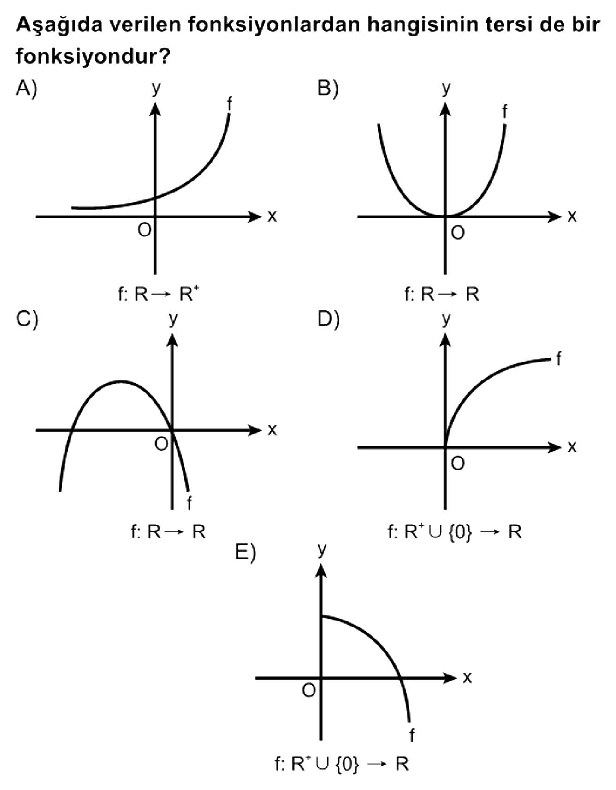
Çözüm
- Tersin fonksiyon olması için fonksiyon bire bir ve örten olmalı.
- B ve C bire bir değil; D ve E değer kümesini kaplamıyor (örten değil).
- A: $\mathbb R\to\mathbb R^+$ artan ve örten (A).
Cevap: A
Soru 19Cevap: A
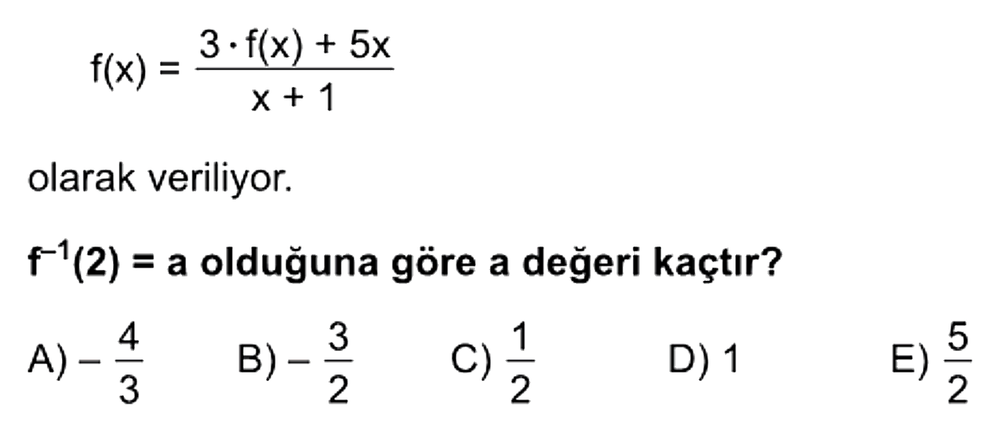
Çözüm
- $f(x)(x+1)=3f(x)+5x\Rightarrow f(x)(x-2)=5x$: $f(x)=\dfrac{5x}{x-2}$.
- $f^{-1}(2)=a\Rightarrow f(a)=2$: $5a=2a-4$.
- $a=-\dfrac43$ (A).
Cevap: A
Soru 20Cevap: B
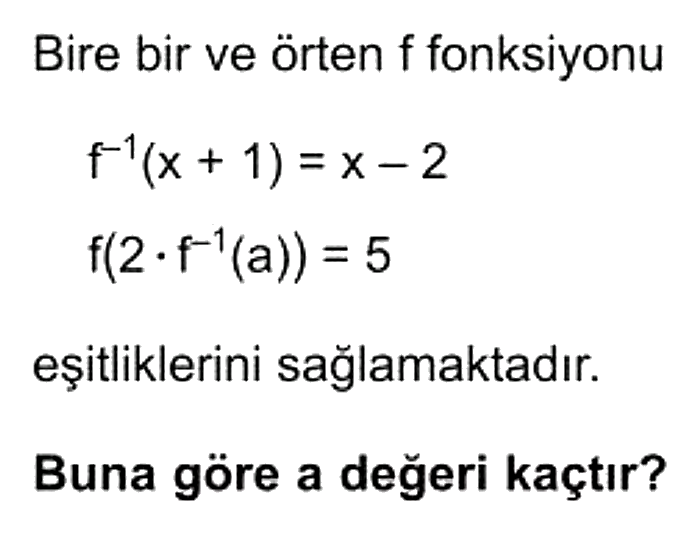
A)$3$B)$4$C)$5$D)$6$E)$7$
Çözüm
- $f^{-1}(x+1)=x-2\Rightarrow f(x-2)=x+1\Rightarrow f(t)=t+3$, $f^{-1}(t)=t-3$.
- $f(2(a-3))=2a-6+3=2a-3$.
- $2a-3=5\Rightarrow a=4$ (B).
Cevap: B
Soru 21Cevap: E
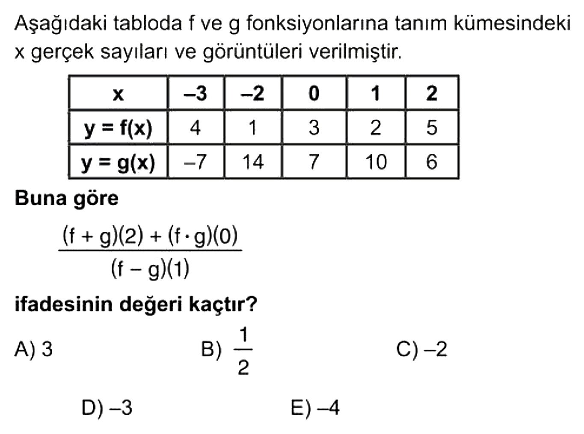
Çözüm
- $(f+g)(2)=5+6=11$, $(f\cdot g)(0)=3\cdot7=21$.
- $(f-g)(1)=2-10=-8$.
- $\dfrac{32}{-8}=-4$ (E).
Cevap: E
Soru 22Cevap: D
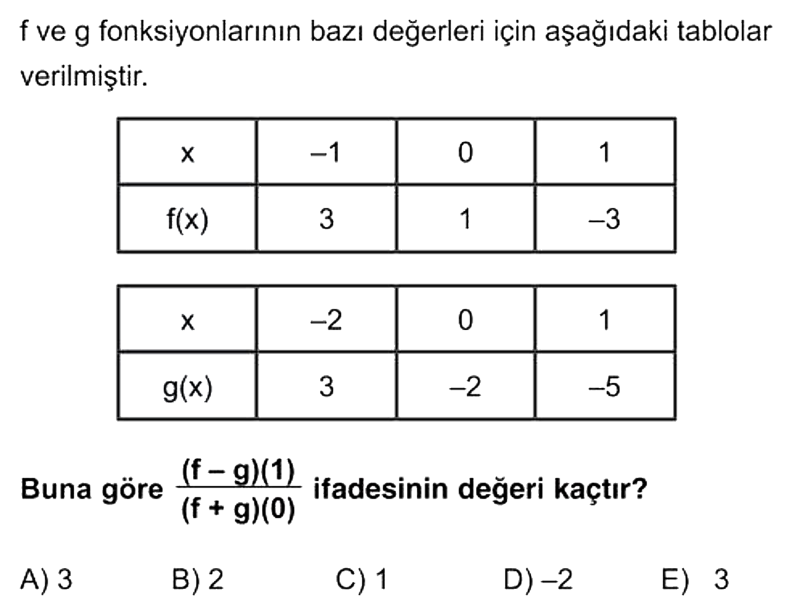
Çözüm
- $(f-g)(1)=-3-(-5)=2$.
- $(f+g)(0)=1+(-2)=-1$.
- $\dfrac{2}{-1}=-2$ (D).
Cevap: D
Soru 23Cevap: C
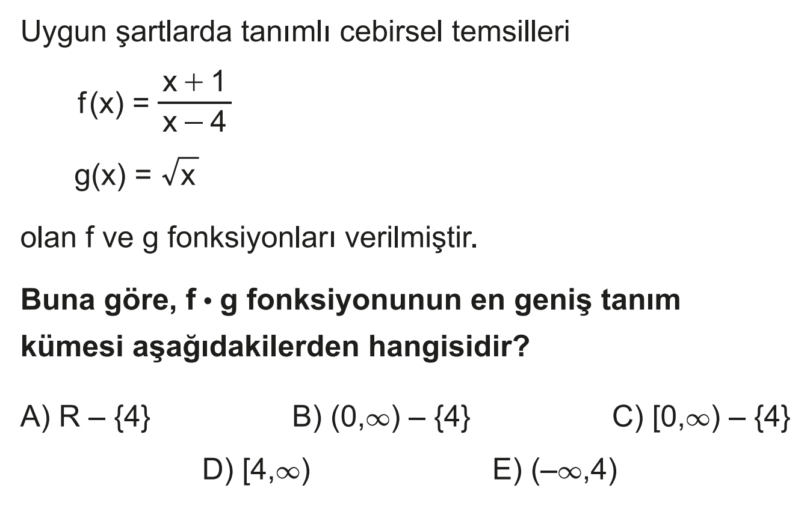
Çözüm
- $f$ için $x\ne4$.
- $g(x)=\sqrt x$ için $x\ge0$.
- Kesişim $[0,\infty)-\{4\}$ (C).
Cevap: C
Soru 24Cevap: B
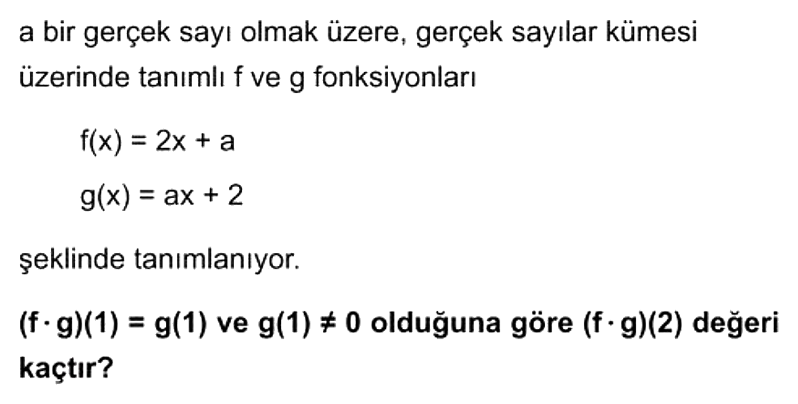
A)$-1$B)$0$C)$1$D)$2$E)$3$
Çözüm
- $f(1)g(1)=g(1)$, $g(1)\ne0\Rightarrow f(1)=1$: $2+a=1$, $a=-1$.
- $f(x)=2x-1$, $g(x)=-x+2$.
- $(f\cdot g)(2)=3\cdot0=0$ (B).
Cevap: B
Soru 25Cevap: B
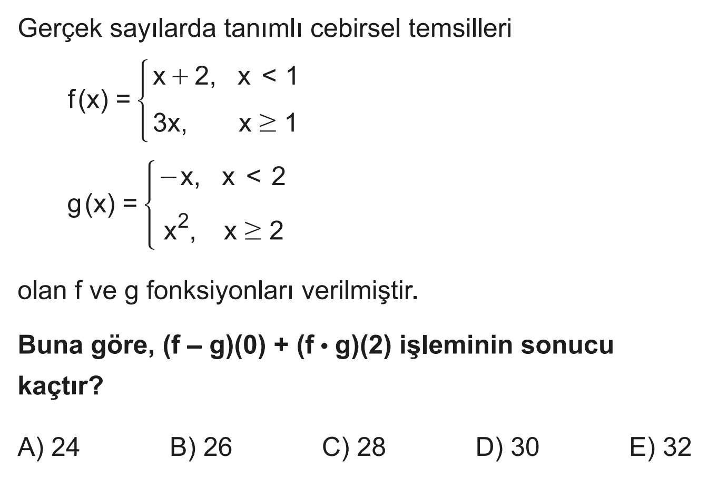
Çözüm
- $0\lt1$: $f(0)=2$; $0\lt2$: $g(0)=0$; $(f-g)(0)=2$.
- $2\ge1$: $f(2)=6$; $2\ge2$: $g(2)=4$; $(f\cdot g)(2)=24$.
- Toplam $26$ (B).
Cevap: B
Soru 26Cevap: C
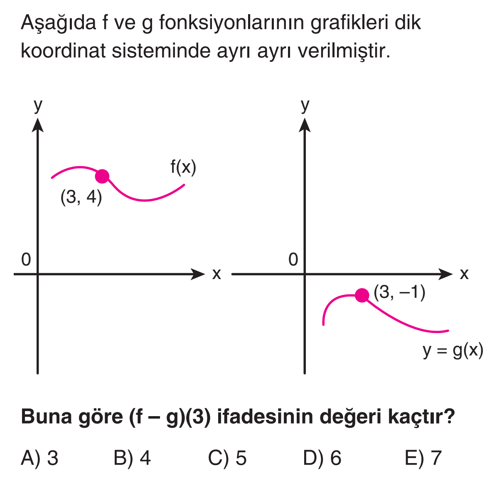
Çözüm
- Grafikten $f(3)=4$.
- Grafikten $g(3)=-1$.
- $(f-g)(3)=5$ (C).
Cevap: C
Soru 27Cevap: D
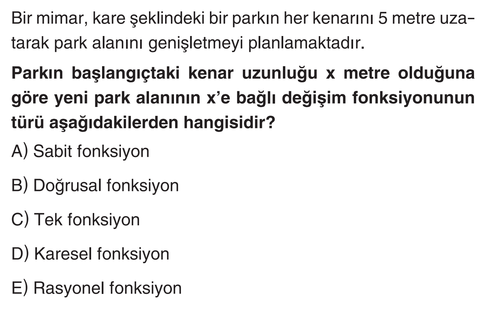
Çözüm
- Yeni kenar $x+5$ metre.
- Yeni alan $(x+5)^2=x^2+10x+25$.
- Karesel fonksiyon (D).
Cevap: D
Soru 28Cevap: B
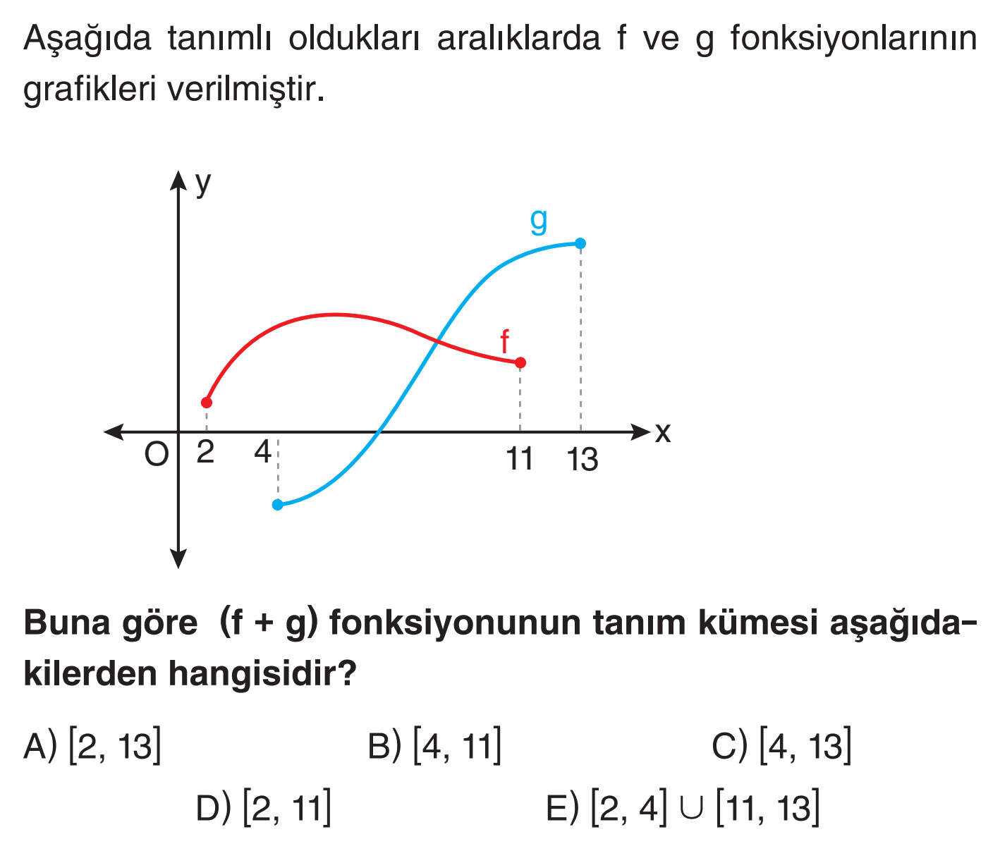
Çözüm
- Grafikten $f$'nin tanım kümesi $[2,11]$.
- $g$'nin tanım kümesi $[4,13]$.
- Kesişim $[4,11]$ (B).
Cevap: B
Soru 29Cevap: B
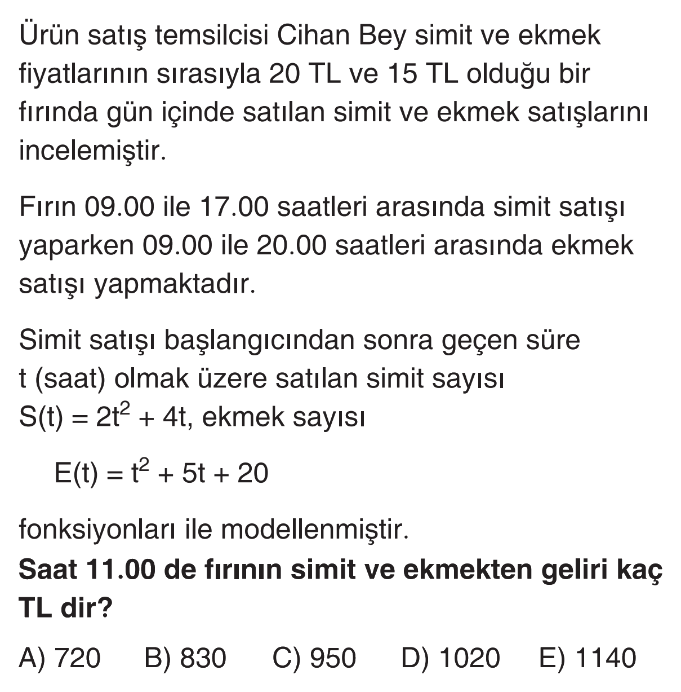
Çözüm
- $11.00$'de $t=2$: $S(2)=8+8=16$ simit, $E(2)=4+10+20=34$ ekmek.
- Gelir $16\cdot20+34\cdot15$.
- $=320+510=830$ TL (B).
Cevap: B
Soru 30Cevap: C
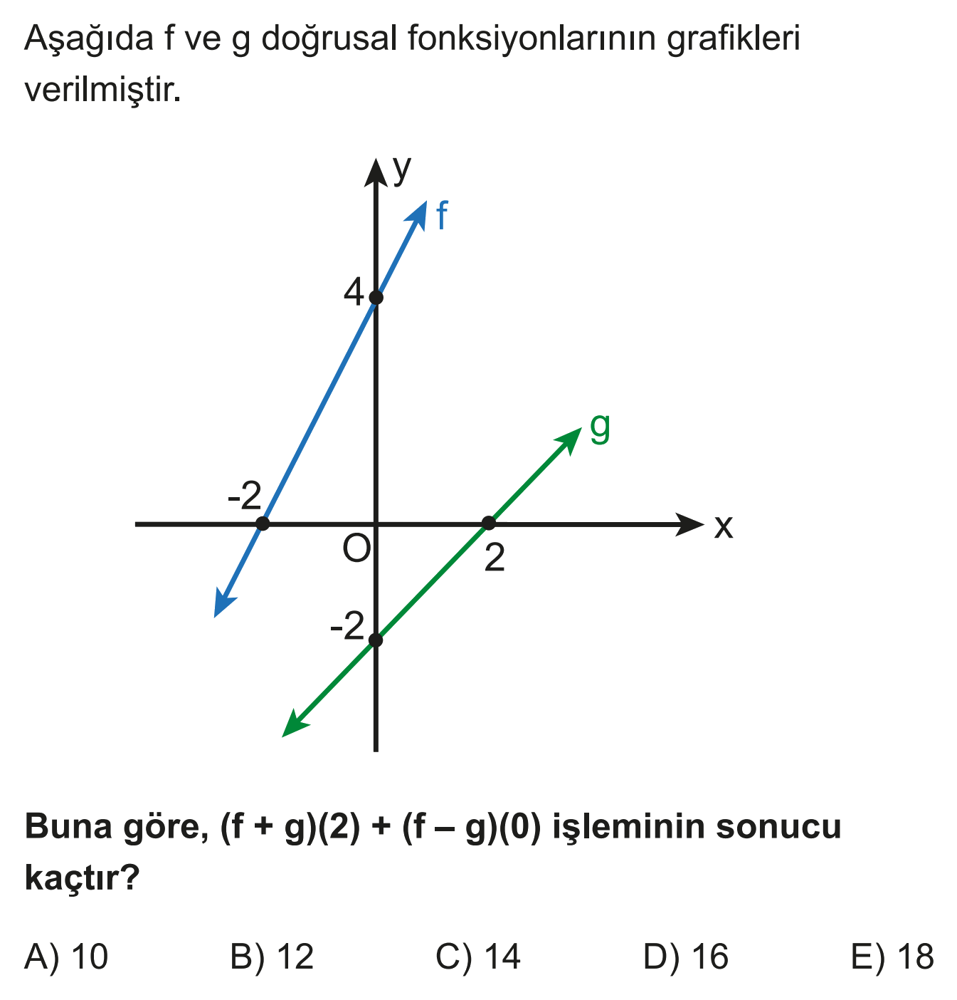
Çözüm
- $f$ doğrusu $(-2,0)$ ve $(0,4)$'ten geçer: $f(x)=2x+4$; $g$ doğrusu $(2,0)$ ve $(0,-2)$'den: $g(x)=x-2$.
- $(f+g)(2)=8+0=8$.
- $(f-g)(0)=4-(-2)=6$; toplam $14$ (C).
Cevap: C